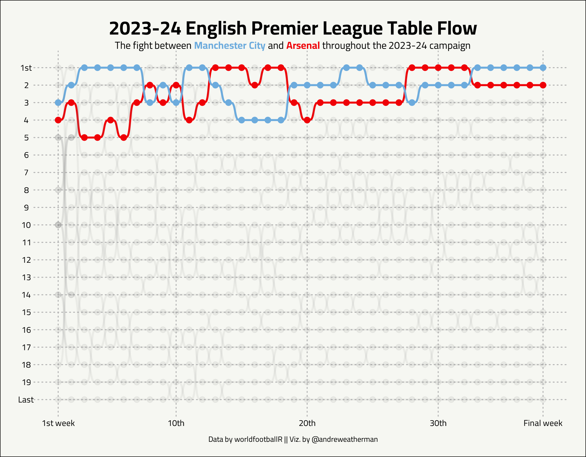

Premier League Standings Flow Chart
ggplot
soccer
Bump charts with
ggbump
Plot
This plot attempts to visualize the “standings flow” in the English Premier League during the 2023-24 campaign, with a focus on champions Manchester City and runners-up Arsenal.
What we will be creating
Full source code
library(tidyverse)
library(worldfootballR)
library(ggbump)
library(ggtext)
library(showtext)
## add Cairo font from google fonts
font_add_google("Cairo", "cairo")
showtext_auto()
## get the data from worldfootball R
## use purrr and weeks 1:38 to loop over all standings and weeks
data <- map_dfr(1:38, \(week) tm_matchday_table("England", start_year = "2023", matchday = week))
p <- data %>%
select(team = squad, week = matchday, place = rk) %>%
## add fill colors and alpha levels based on whether teams are man city/arsenal or not
mutate(
fill_color = case_when(
team == 'Man City' ~ '#6CABDD',
team == 'Arsenal' ~ '#EF0107',
.default = 'grey50'
),
alpha = ifelse(team %in% c('Man City', 'Arsenal'), 1, 0.5)
) %>%
ggplot(aes(week, place, color = fill_color, group = team)) +
geom_point(size = 1.7, aes(alpha = alpha)) +
## geom_bump from ggbump
geom_bump(aes(alpha = alpha), linewidth = 0.7) +
scale_color_identity() +
## customize our weeks lables
scale_x_continuous(breaks = c(1, seq(10, 30, 10), 38),
labels = c("1st week", "10th", "20th", "30th", 'Final week')) +
## reverse the y-axis so 1st is plotted at the top and customize the labels
scale_y_reverse(breaks = seq(1, 20, 1), labels = c("1st", seq(2, 19, 1), 'Last')) +
theme_void() +
theme(legend.position = 'none', # remove legend
plot.title.position = 'plot',
## add the cairo font and change some sizes for saving
plot.title = element_text(family = 'cairo', hjust = 0.5, size = 46, face = 'bold', vjust = 0),
plot.subtitle = element_markdown(family = 'cairo', hjust = 0.5, size = 24),
plot.caption.position = 'plot',
plot.caption = element_text(family = 'cairo', hjust = 0.5, vjust = -2, size = 18),
axis.text = element_text(family = 'cairo', size = 20),
axis.text.x = element_text(vjust = -1),
## add light dotted major gridlines for viewing
panel.grid.major.x = element_line(color = 'grey70', linetype = 'dotted'),
panel.grid.major.y = element_line(color = 'grey70', linetype = 'dotted'),
## set margins
plot.margin = unit(c(0.25, 0.5, 0.5, 0.5), "cm"),
## make background off-white
plot.background = element_rect(fill = "#F6F7F2")) +
labs(title = '2023-24 English Premier League Table Flow',
## with ggtext, we can use minor HTML to change color and weight of our subtitle
subtitle = "<p>The fight between <span style='color:#6CABDD;'><b>Manchester City</b></span> and <span style='color:#EF0107;'><b>Arsenal</b></span> throughout the 2023-24 campaign</p>",
caption = "Data by worldfootballR || Viz. by @andreweatherman")
## save
ggsave(plot = p, w = 6.16, h = 4.81, "premier_league_flow.png")